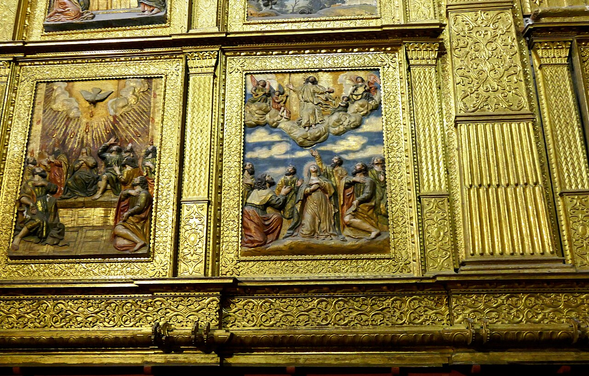

Museo virtual de la Iglesia de Santo Domingo de Tunja
Espacio curatorial en planificación dedicado a la contemplación interpretativa del patrimonio espacial, retablístico y documental del templo conventual dominico.
Museo virtual próximamente
El módulo de recorrido espacial y exploración museográfica digital no se encuentra activo en esta entrega y se incorporará en una etapa posterior del proyecto, una vez concluidos el levantamiento visual autorizado y la curaduría documental definitiva.

Descripción del espacio futuro
Propósito educativo y patrimonial
El futuro Museo virtual tendrá como finalidad ofrecer a investigadores, estudiantes y visitantes nacionales e internacionales una aproximación rigurosa y respetuosa a la espacialidad interior de la Iglesia de Santo Domingo de Tunja.
Su diseño priorizará la comprensión histórica de los programas iconográficos, permitiendo apreciar detalles de carpintería hispano-mudéjar, pintura mural al temple y entalladuras barrocas que por su altura o delicadeza requieren condiciones especiales de conservación en la visita presencial.
Núcleos temáticos previstos para la etapa posterior
- Núcleo I
- Atrio, portada colonial en piedra sillar, torre campanario y transición urbana sobre la Carrera 11.
- Núcleo II
- Nave central, arcos torales, coro alto y lectura geométrica del artesonado mudéjar del siglo XVI.
- Núcleo III
- Capilla de Nuestra Señora del Rosario: retablo mayor, columnas salomónicas y plástica del dorado colonial.
Criterios de registro visual y catalogación
La etapa futura contemplará el registro fotográfico sin iluminación invasiva de los quince misterios del Rosario, la epigrafía del siglo XVI y los detalles de flora y fauna labrados en las columnas y pilastras del templo.
Cada pieza contará con su ficha técnica verificada, cronología constructiva, glosario de términos de carpintería de lo blanco y referencias bibliográficas de respaldo académico.
Respeto al carácter litúrgico y monumental
Toda publicación futura dentro del módulo de Museo virtual se articulará como herramienta pedagógica complementaria, respetando las normas de conservación del Monumento Nacional (Ley 163 de 1959) y la vida litúrgica del templo.
Mientras concluye el proceso de curaduría documental, puede consultar el inventario verificado en la sección de Patrimonio y las láminas acreditadas en Galería.